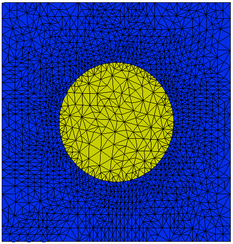

|
Controlling Accuracy |

  
|
|
Controlling Accuracy |
|
FlexPDE applies a consistency check to integrals of the PDE's over the mesh cells. From this it estimates the relative uncertainty in the solution variables and compares this to an accuracy tolerance. If any mesh cell exceeds the tolerance, that cell is split, and the solution is recomputed.
The error tolerance is called ERRLIM, and can be set in the SELECT section of the script.
The default value of ERRLIM is 0.002, which means that FlexPDE will refine the mesh until the estimated error in any variable (relative to the variable range) is less than 0.2% over every cell of the mesh.
Note: This does not mean that FlexPDE can guarantee that the solutions is accurate to 0.2% over the domain. Individual cell errors may cancel or accumulate in ways that are hard to predict.
In our sample problem, we can insert the statement
SELECT ERRLIM=1e-5
as a new section. This tells FlexPDE to split any cell in which the consistency check implies an error of more than 0.001% over the cell.
FlexPDE refines the mesh twice, and completes with a mesh that looks like this:

In this particular case, the result plots are not noticeably different from the default case.
Note: In time-dependent problems, spatial and temporal errors are both set by ERRLIM, but they can also be independently controlled by XERRLIM and TERRLIM. See the Problem Descriptor Reference.
Page url: index.html?controllingaccuracy.html